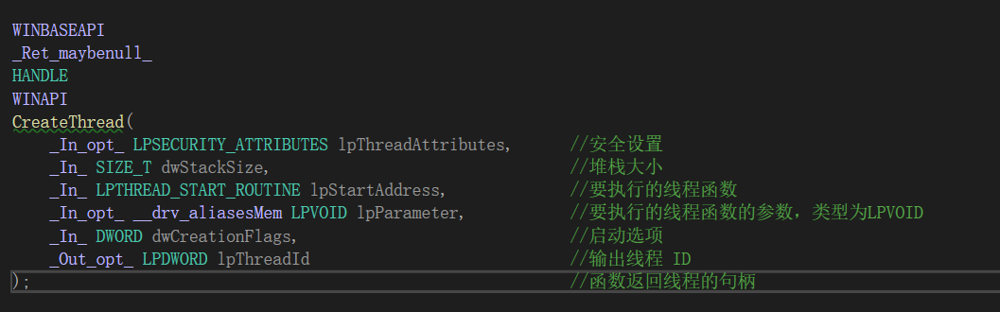

# 什么是线程
- 线程是附属在进程上的执行实体，是代码的执行流程
- 一个进程课以包含多个线程，但一个进程至少要包含一个线程。
滴水老师：进程是一种空间上的概念，它代表的是 4GB 的虚拟内存。线程是一种时间上的概念，线程就是当前正在运行的代码。
# 创建线程
# CreateThread 函数
返回值：函数成功，返回线程句柄；函数失败返回 false。若不想返回线程 ID, 设置值为 NULL。
函数说明：
创建一个线程。
语法：hThread = CreateThread (&security_attributes, dwStackSize, ThreadProc,pParam, dwFlags, &idThread);

WINBASEAPI | |
_Ret_maybenull_ | |
HANDLE | |
WINAPI | |
CreateThread( | |
_In_opt_ LPSECURITY_ATTRIBUTES lpThreadAttributes, // 安全设置 | |
_In_ SIZE_T dwStackSize, // 堆栈大小 | |
_In_ LPTHREAD_START_ROUTINE lpStartAddress, // 要执行的线程函数 | |
_In_opt_ __drv_aliasesMem LPVOID lpParameter, // 要执行的线程函数的参数，类型为 LPVOID | |
_In_ DWORD dwCreationFlags, // 启动选项 | |
_Out_opt_ LPDWORD lpThreadId // 输出线程 ID | |
); // 函数返回线程的句柄 |
# 参数说明
关于这个函数的说明，百度百科很详细 https://baike.baidu.com/item/CreateThread/8222652
# lpThreadAttributes
lpThreadAttributes：指向 SECURITY_ATTRIBUTES 型态的结构的指针。在 Windows 98 中忽略该参数。在 Windows NT 中，NULL 使用默认安全性，不可以被子线程继承，否则需要定义一个结构体将它的 bInheritHandle 成员初始化为 TRUE
dwStackSize，设置初始栈的大小，以字节为单位，如果为 0，那么默认将使用与调用该函数的线程相同的栈空间大小。任何情况下，Windows 根据需要动态延长堆栈的大小。
# lpStartAddress
lpStartAddress，指向线程函数的指针，形式：@函数名，函数名称没有限制，
线程有两种声明方式
（1）DWORD WINAPI 函数名 (LPVOID lpParam); // 标准格式
DWORD WINAPI 函数名 (LPVOID lpParam) | |
{ | |
return 0; | |
} | |
CreateThread(NULL, 0, 函数名, 0, 0, 0); |
（2）void 函数名 ();
使用 void 函数名 () 此种线程声明方式时，lpStartAddress 需要加入 LPTHREAD_START_ROUTINE 转换，如
void 函数名() | |
{ | |
return; | |
} | |
CreateThread(NULL, 0, (LPTHREAD_START_ROUTINE)函数名, 0, 0, 0); |
# lpParameter
lpParameter：向线程函数传递的参数，是一个指向结构的指针，不需传递参数时，为 NULL。
# dwCreationFlags
dwCreationFlags ：线程标志，可取值如下
（1）CREATE_SUSPENDED (0x00000004)：创建一个挂起的线程，
（2）0：表示创建后立即激活。
（3）STACK_SIZE_PARAM_IS_A_RESERVATION (0x00010000)：dwStackSize 参数指定初始的保留堆栈 的大小，否则，dwStackSize 指定提交的大小。该标记值在 Windows 2000/NT and Windows Me/98/95 上不支持。
# lpThreadId
lpThreadId: 保存新线程的 id。
# 实例代码
#include<iostream> | |
#include<stdlib.h> | |
#include<windows.h> | |
using namespace std; | |
DWORD WINAPI ThreadProc(LPVOID lpParameter) | |
{ | |
// 强转传递的参数的类型 | |
int* p = (int*)lpParameter; | |
//cout << *p << endl; | |
for (int i = 0; i < *p; i++) | |
{ | |
Sleep(500); | |
cout << "子+++++" << i << endl; | |
} | |
return 0; | |
} | |
// 参数 | |
int n = 10; | |
int main(int argc, char* argv[]) | |
{ | |
HANDLE hThread = CreateThread(NULL, 0, ThreadProc, (LPVOID)&n, 0, NULL); | |
//1. 返回的是线程句柄 | |
//2. 第三个参数是要执行的线程函数 | |
//3. 第四个参数是要执行的线程函数的参数，类型为 LPVOID | |
//hThread | |
//cout << hThread << endl; | |
CloseHandle(hThread); | |
for (int i = 0; i < 100; i++) | |
{ | |
Sleep(500); | |
printf("父------%d\n", i); | |
} | |
system("pause"); | |
return 0; | |
} |
# 线程控制 API
# 如何让线程停下来
让自己停下来:Sleep()
让别人停下来:SuspendThread()
线程恢复:ResumeThread()
示例
#include<stdio.h> | |
#include<stdlib.h> | |
#include<windows.h> | |
DWORD WINAPI ThreadProc(LPVOID lpParameter) | |
{ | |
int* p = (int*)lpParameter; | |
for (int i = 0; i < *p; i++) | |
{ | |
Sleep(500); | |
printf("+++++%d \n", i); | |
} | |
return 0; | |
} | |
int n = 100; | |
void main(int argc, char* argv[]) | |
{ | |
HANDLE hThread; | |
hThread = CreateThread(NULL, 0, ThreadProc, (LPVOID)&n, 0, NULL); | |
Sleep(5000); | |
SuspendThread(hThread); // 挂起线程 | |
Sleep(5000); | |
ResumeThread(hThread); // 恢复线程 | |
getchar(); // 防止主线程结束 | |
CloseHandle(hThread); | |
system("pause"); | |
return; | |
} |
# 相关函数
在多线程下面，有时候我们会希望等待某一线程完成了再继续做其他事情，要实现这个目的，可以使用 Windows API 函数 WaitForSingleObject ，或者 WaitForMultipleObjects 。这两个函数都会等待 Object 被标为有信号 (signaled) 时才返回的。
那么，什么是信号呢？
简单来说，Windows 下创建的 Object 都会被赋予一个状态量。如果 Object 被激活了，或者正在使用，那么该 Object 就是无信号，也就是不可用；另一方面，如果 Object 可用了，那么它就恢复有信号了。
这两个函数的优点是它们在等待的过程中会进入一个非常高效沉睡状态，只占用极少的 CPU 时间片。（这两个函数都是在内核状态下等待内核对象，不切换到用户模式下，因而效率很高）
# WaitForSingleObject
- 格式
DWORD WaitForSingleObject( HANDLE hHandle, DWORDdwMilliseconds);
有两个参数，分别是 THandle 和 Timeout (毫秒单位)。
如果想要等待一条线程，那么你需要指定线程的 Handle ，以及相应的 Timeout 时间。当然，如果你想无限等待下去， Timeout 参数可以指定系统常量 INFINITE 。
- 使用对象
它可以等待如下几种类型的对象：
Event ， Mutex ， Semaphore ， Process ， Thread
- 返回类型
有三种返回类型：
WAIT_OBJECT_0 , 表示等待的对象有信号（对线程来说，表示执行结束）；
WAIT_TIMEOUT , 表示等待指定时间内，对象一直没有信号（线程没执行完）；
WAIT_ABANDONED 表示对象有信号，但还是不能执行 一般是因为未获取到锁或其他原因
示例
#include <windows.h> | |
#include <stdio.h> | |
#include <iostream.h> | |
// 声明函数 创建线程 | |
DWORD WINAPI FunProc( LPVOID lpParameter); | |
void main() | |
{ | |
HANDLE hThread; | |
hThread=CreateThread(NULL,0,FunProc,NULL,0,NULL); | |
DWORD dwRet=WaitForSingleObject(hThread, 1); | |
if(dwRet==WAIT_OBJECT_0) | |
{ | |
printf("创建的线程执行结束\n"); | |
} | |
if(dwRet==WAIT_TIMEOUT) | |
{ | |
printf("等待超时\n"); | |
} | |
if(dwRet==WAIT_ABANDONED) | |
{ | |
printf("Abandoned\n"); | |
} | |
CloseHandle(hThread); | |
} | |
DWORD WINAPI FunProc( LPVOID lpParameter ) | |
{ | |
int i=1; | |
for(; i<1000; i++) | |
{ | |
printf("%d ", i); | |
if(! (i%10)) | |
printf("\n"); | |
} | |
return 0; | |
} |
# WaitForMultipleObjecct
相对来说， WaitForMultipleObjects 要复杂点点
格式为：
DWORD WaitForMultipleObjects(DWORD nCount, CONST HANDLE *lpHandles, BOOL bWaitAll, DWORD dwMilliseconds);
四个参数分别是：
nCount，DWORD 类型，用于指定句柄数组的数量lphObjects，Pointer 类型，用于指定句柄数组的内存地址bWaitAll，Bool 类型，TRUE表示函数等待所有指定句柄的Object有信号为止，FALSE当有其中一个信号量有效时就向下执行dwTimeout，DWORD 类型，用于指定等待的 Timeout 时间，单位毫秒，可以是INFINITE
示例
#include <windows.h> | |
#include <stdio.h> | |
#include <iostream> | |
// 声明函数 创建线程 | |
DWORD WINAPI FunProc(LPVOID lpParameter); | |
DWORD WINAPI FunProc1(LPVOID lpParameter); | |
int main() | |
{ | |
HANDLE hThread[2]; | |
hThread[0] = CreateThread(NULL, 0, FunProc, NULL, 0, NULL); | |
hThread[1] = CreateThread(NULL, 0, FunProc1, NULL, 0, NULL); | |
WaitForMultipleObjects(2, hThread, TRUE, INFINITE); | |
// 线程执行结束后打印 | |
std::cout << "End of thread execution!!!" << std::endl; | |
CloseHandle(hThread[0]); | |
CloseHandle(hThread[1]); | |
return 0; | |
} | |
DWORD WINAPI FunProc(LPVOID lpParameter) | |
{ | |
int i = 1; | |
for (; i < 100; i++) | |
printf("**************%d \n", i); | |
return 0; | |
} | |
DWORD WINAPI FunProc1(LPVOID lpParameter) | |
{ | |
int i = 1; | |
for (; i < 100; i++) | |
printf("-------------%d \n", i); | |
return 0; | |
} |
# TerminateThread
TerminateThread 在线程外终止一个线程，用于强制终止线程。
# 声明
BOOLTerminateThread( HANDLEhThread,DWORDdwExitCode);
# 参数详解
HANDLE hThread ：被终止的线程的句柄，为 CWinThread 指针。DWORD dwExitCode ：退出码。
# 返回值
函数执行成功则返回非零值，执行失败返回 0。调用 GetLastError 获得返回的值。
💔注意
TerminateThread 强烈不建议使用，因为这个函数的执行是异步的，
你无法保证调用之后会立即退出，同时线程的堆栈均不会被销毁，
导致内存泄露。如果调用了这个函数，请确保使用 WaitForSingleObject 来等待线程对象的结束。
# GetExitCodeThread
GetExitCodeThread () 将传回线程函数的返回值。然而，GetExitCodeThread () 的一个糟糕行为是，当线程还在进行，尚未有所谓结束代码时，它会传回 TRUE 表示成功。如果这样，IpExitCode 指向的内存区域中应该放的是 STILL-ACTIVE, 你必须小心这种行为，也就是说你不可能从其返回值中知道 “到底是线程还在运行呢，还是它已结束，但返回值为 STILL_ACTIVE”。
BOOL GetExitCodeThread ( | |
HANDLE hThread, //in, 线程 handle, 也就是 CreateThread () 的返回值 | |
LPDWORD lpExitCode //out, 存储线程结束代码，也就是线程的返回值 | |
); |
说明：此函数调用成功返回 TRUE , 失败返回 FALSE , 只表示这个函数是否调用成功而己，不能根据返回值来判断一个线程是否结束，而要根据 lpExitCode 的值来确定。
lpExitCode 值为 STILL_ACTIVE 表示线程正在运行，若线程己经结束，则 lpExitCode 中存储指定线程的返回值.
示例
#include <windows.h> | |
#include <stdio.h> | |
#include <iostream> | |
// 声明函数 创建线程 | |
DWORD WINAPI FunProc(LPVOID lpParameter); | |
DWORD WINAPI FunProc1(LPVOID lpParameter); | |
int main() | |
{ | |
HANDLE hThread[2]; | |
DWORD dwResult, dwResult1; | |
hThread[0] = CreateThread(NULL, 0, FunProc, NULL, 0, NULL); | |
hThread[1] = CreateThread(NULL, 0, FunProc1, NULL, 0, NULL); | |
WaitForMultipleObjects(2, hThread, TRUE, INFINITE); | |
GetExitCodeThread(hThread[0], &dwResult); | |
GetExitCodeThread(hThread[1], &dwResult1); | |
// 线程执行结束后打印 | |
std::cout << "End of thread execution!!!" << std::endl; | |
// 打印返回值 | |
std::cout <<"Thread return: "<< dwResult << std::endl; | |
std::cout << "Thread1 return: " << dwResult1 << std::endl; | |
CloseHandle(hThread[0]); | |
CloseHandle(hThread[1]); | |
return 0; | |
} | |
DWORD WINAPI FunProc(LPVOID lpParameter) | |
{ | |
int i = 1; | |
for (; i < 100; i++) | |
printf("**************%d \n", i); | |
return 0; | |
} | |
DWORD WINAPI FunProc1(LPVOID lpParameter) | |
{ | |
int i = 1; | |
for (; i < 100; i++) | |
printf("-------------%d \n", i); | |
return 1; | |
} |
# CONTEXT 结构体
当线程进行切换的时候，上一个未执行完毕的线程的状态会保存在 CONTEXT 结构体中。
typedef struct _CONTEXT | |
{ | |
DWORD ContextFlags // -| +00h | |
DWORD Dr0 // | +04h | |
DWORD Dr1 // | +08h | |
DWORD Dr2 // > 调试寄存器 +0Ch | |
DWORD Dr3 // | +10h | |
DWORD Dr6 // | +14h | |
DWORD Dr7 // -| +18h | |
FLOATING_SAVE_AREA FloatSave; // 浮点寄存器区 +1Ch~~~88h | |
DWORD SegGs //-| +8Ch | |
DWORD SegFs // |\ 段寄存器 +90h | |
DWORD SegEs // |/ +94h | |
DWORD SegDs //-| +98h | |
DWORD Edi //________ +9Ch | |
DWORD Esi // | 通用 +A0h | |
DWORD Ebx // | 寄 +A4h | |
DWORD Edx // | 存 +A8h | |
DWORD Ecx // | 器 +ACh | |
DWORD Eax //_|___组_ +B0h | |
DWORD Ebp //++++++ +B4h | |
DWORD Eip // | 控制 +B8h | |
DWORD SegCs // | 寄存 +BCh | |
DWORD EFlag // | 器组 +C0h | |
DWORD Esp // | +C4h | |
DWORD SegSs //++++++ +C8h | |
BYTE ExtendedRegisters[MAXIMUM_SUPPORTED_EXTENSION]; | |
} CONTEXT; | |
typedef CONTEXT *PCONTEXT; | |
#define MAXIMUM_SUPPORTED_EXTENSION 512 |
# 获取和设置线程上下文
// 获取 | |
BOOL GetThreadContext( | |
HANDLE hThread, // handle to thread with context | |
LPCONTEXT IpContext // context structure | |
); | |
// 设置 | |
BOOL SetThreadContext( | |
HANDLE hThread, // handle to thread | |
CONST CONTEXT *lpContext //context structure | |
); |
#include <windows.h> | |
#include <stdio.h> | |
#include <iostream> | |
// 声明函数 创建线程 | |
DWORD WINAPI FunProc(LPVOID lpParameter); | |
DWORD WINAPI FunProc1(LPVOID lpParameter); | |
int main() | |
{ | |
HANDLE hThread[2]; | |
CONTEXT context; | |
hThread[0] = CreateThread(NULL, 0, FunProc, NULL, 0, NULL); | |
hThread[1] = CreateThread(NULL, 0, FunProc1, NULL, 0, NULL); | |
SuspendThread(hThread[0]); | |
// 需要哪个值赋给哪个值 | |
context.ContextFlags = CONTEXT_INTEGER; | |
GetThreadContext(hThread[0], &context); | |
printf("EAX:%#X\nECX:%#X\n", context.Eax, context.Ecx); | |
CloseHandle(hThread[0]); | |
CloseHandle(hThread[1]); | |
return 0; | |
} | |
DWORD WINAPI FunProc(LPVOID lpParameter) | |
{ | |
int i = 1; | |
for (; i < 100; i++) | |
printf("**************%d \n", i); | |
return 0; | |
} | |
DWORD WINAPI FunProc1(LPVOID lpParameter) | |
{ | |
int i = 1; | |
for (; i < 100; i++) | |
printf("-------------%d \n", i); | |
return 1; | |
} |
# Reference
https://blog.csdn.net/xiaobai1593/article/details/6672193